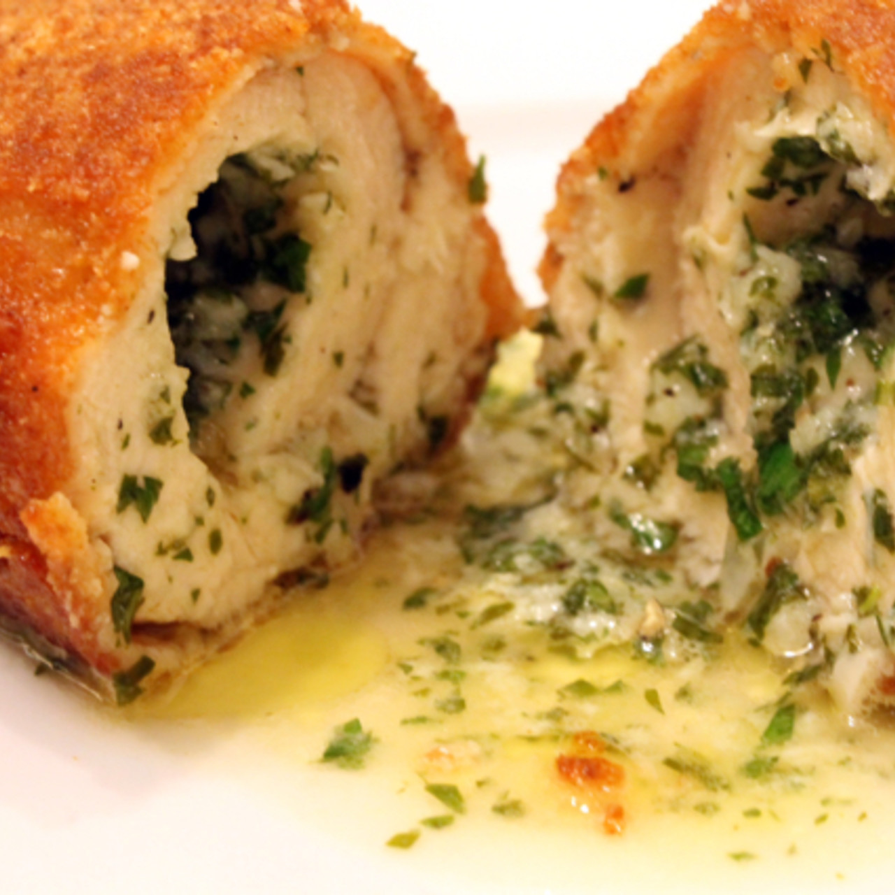

Chicken Kiev

Description
butter squirts out hen you cut into it delcious
Ingriedients
- 4 rashers of smoked streaky bacon
- olive oil
- 4 x 150 g skinless chicken breasts ; (I got mine from the butcher with the bone in, but either way is fine)
- 3 tablespoons plain flour
- 2 large free-range eggs
- 150 g fresh breadcrumbs
- sunflower oil
- 2 large handfuls of baby spinach ; or rocket
- 2 lemons
- For the butter:
- 4 cloves of garlic
- 1/2 a bunch of fresh flat-leaf parsley (15g)
- 4 knobs of unsalted butter ; (at room temperature)
- 1 pinch of cayenne pepper
steps
- Fry the bacon in a pan on a medium heat with a tiny drizzle of olive oil, until golden and crisp, then remove. For the butter, peel the garlic, then finely chop with the parsley leaves and mix into the softened butter with the cayenne. Firm up in the fridge.
- Working one-by-one on a board, stuff the chicken breasts. To do this, start by pulling back the loose fillet on the back of the breast – put your knife in the opposite direction and slice to create a long pocket (watch how-to video below). Open the pocket up with your fingers, cut the chilled butter into four and push one piece into the pocket, then crumble in a rasher of crispy bacon. Fold and seal back the chicken, completely covering the butter and giving you a nice neat parcel. Repeat with the 3 remaining breasts.
- Preheat the oven to 180°C/350°F/gas 4. Place the flour in one shallow bowl, whisk the eggs in another, and put the breadcrumbs and a pinch of seasoning into a third. Evenly coat each chicken breast in flour, then beaten egg, letting any excess drip off, and finally, turn them in the breadcrumbs, patting them on until evenly coated. Shallow-fry in 2cm of sunflower oil on a medium to high heat for a couple of minutes on each side, or until lightly golden, then transfer to a tray and bake in the oven for 10 minutes, or until cooked through. You can bake them completely in the oven and skip the frying altogether, you just need to drizzle them with olive oil and bake for about 20 minutes – they won't be as golden, but they'll be just as delicious.
link back to main page